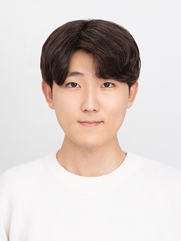
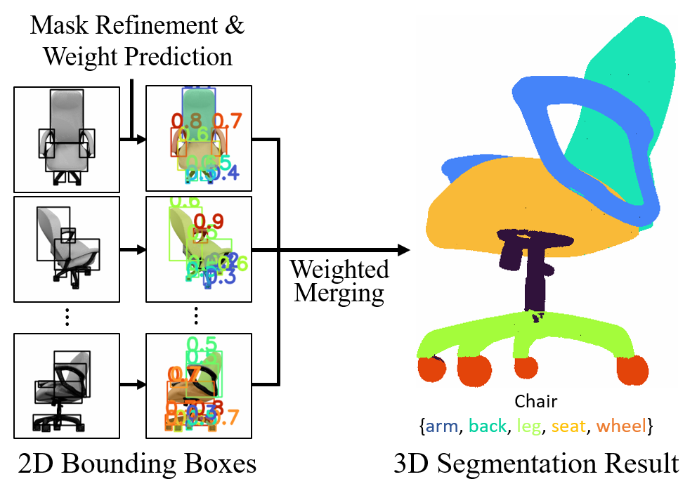
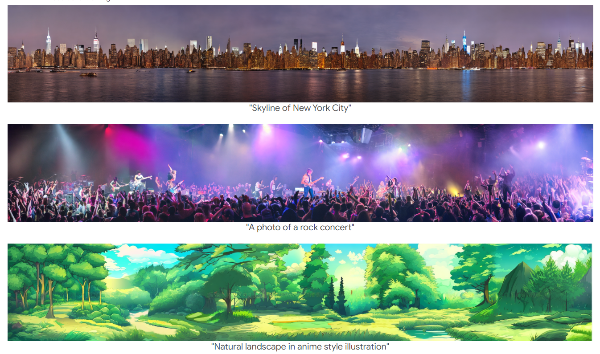
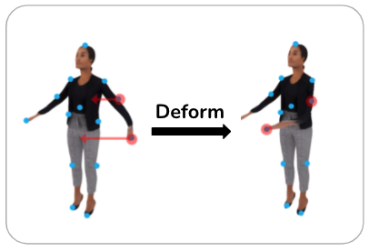

|
Hyunjin Kim
I'm a 3D Vision Engineer / Researcher at KRAFTON AI Research Center. I received my Master's degree at KAIST Visual AI Group, advised by Prof. Minhyuk Sung. I received my Bachelor's degree double majoring in Mathematics and Computer Science from the KAIST in 2021.
I'm interested in various topics for both 2D and 3D computer vision, such as generative AI, manipulation, segmentation, NeRF, and multimodal tasks. I really enjoy learning new things, and I am thoroughly prepared to adapt quickly and immerse myself in any field!
My Erdős number is 4 (Hyunjin Kim → Minhyuk Sung → Leonidas Guibas → Frances Yao → Paul Erdős)
Email /
Google Scholar /
CV
|

|
|

|
PartSTAD: 2D-to-3D Part Segmentation Task Adaptation
Hyunjin Kim, Minhyuk Sung
ECCV, 2024
Paper
|
|

|
SyncDiffusion: Coherent Montage via Synchronized Joint Diffusions
Yuseung Lee, Kunho Kim, Hyunjin Kim, Minhyuk Sung
NeurIPS, 2023
arXiv /
Project /
Code
|
|

|
Pop-Out Motion: 3D-Aware Image Deformation via Learning Shape Laplacian
Jihyun Lee*, Minhyuk Sung*, Hyunjin Kim, Tae-Kyun (T-K) Kim (* denotes equal contribution)
CVPR, 2022
arXiv /
Project /
Code /
Video
|
Academic Services
Reviewer
CVPR 2024
CVPR 2023
|
|
{kind=link}